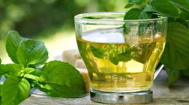
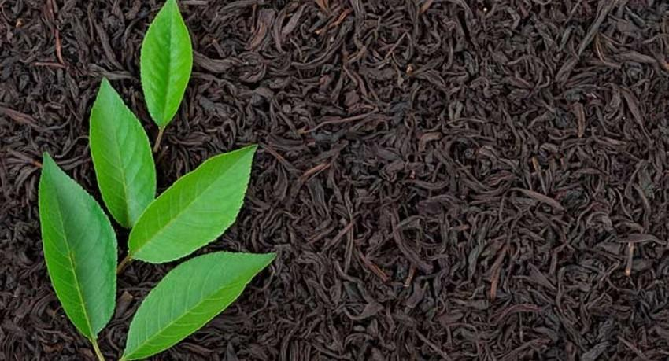
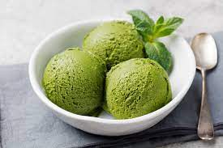

About Our Tea Industry

Sri Lanka is an island made for tea. This was introduced in 1867, Ceylon Tea has grown to be the top agriculture export in Sri Lanka and provides direct and indirect employment to nearly 1 million people while around 4% of the country’s land area is covered in tea plantations amounting to nearly 203000 hectares. The country produces tea throughout the year and the total tea production is about 340 million kilograms per annum. Sri Lanka’s tea-growing areas are mainly concentrated in the central highlands and southern inland areas of the island. Tea grown in these areas are broadly grouped according to their elevations, with high grown tea sourced from tea plantations found from 1200 m upwards; medium grown tea from estates scattered between 600 m to 1200 m and low grown tea from sea level up to 600 m.
In addition, Sri Lanka’s tea-growing areas are also divided into seven main regions based mainly on the terroir, namely Nuwara Eliya, Uda Pussellawa, Uva, Dimbula, Kandy, Sabaragamuwa, and Ruhuna. Each area produces a uniquely flavored Ceylon Tea, mainly due to the contrasting elevation, climate, and terrain in each region. At present, a larger portion of the country’s tea is exported as Ceylon Black Tea, while the country also produces Ceylon Green Tea, a type developed from Assamese seedlings. Ceylon White Tea, namely silver and golden tips is celebrated around the world for their finest flavor and are among the most expensive tea varieties in the world.
HOW TEA IS PROCESSING ?

-
THE CHOSEN LEAVES
- The first secret is in the art of plucking. To ensure the excellence of the final product, skilled hands aided by trained eyes pluck only unopened buds accompanied by two leaves sprouting from the springs of each tea bush. -
THE ROLLING
- Once the withering process is finally through and done, the withered leaves enter the third stage. It’s called rolling. They are fed to rolling machines to break their stubborn cell structures of resistance, to open their hearts and seduce them to release the natural essence contained within. -
BLOW HOT,COLD
- Next, they must go through fermentation, the process of oxidation; exposed to air which will brown them to a perfect tan. Then after being blown cold they must be blown hot. They must go through the furnace of fire, pass through a chamber of hot air, and emerge with the mettle of their flavor tried, tested and proven. It’s this that will set them apart. -
AT LAST
-The tea is still not ready for your cup. The tea is now placed on a vibrating mesh and sorted according to size and grades, before they are weighed and packed separately to be presented to the world as the pride of Ceylon Tea: the enchantment that will fill your cup.
THE SPECIALITY OF CEYLON TEA
PROVEN BENEFITS OF TEA

- Fight allergies
- Reduce body fat
- Improve skin health
- Fight off depression
- Fights with cancer
- Maintin low blood sugar level
THE BENEFITS OF COMPOST TEA

- Protects against many diseases & harmful organisms
- Low strenght fertilizer perfect for house plants,seedlings and gradens
- Increases the ability of soil to hold nutrients and retain water
DID YOU KNOW ?
The tea plant is the source of all true teas,such as green,blackyellow andoolong.Tea leaves are popularly consumed as a warm infusion or as a refreshing,cooling beverage .but they are also used to give flavourto ice cream,smooties,cakes and many other foods